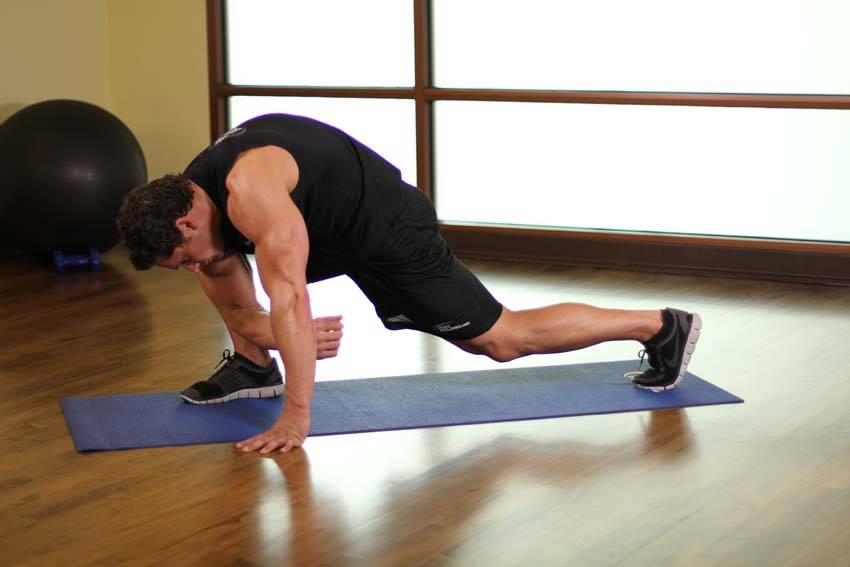

- This is a three-part stretch. Begin by lunging forward, with your front foot flat on the ground and on the toes of your back foot. With your knees bent, squat down until your knee is almost touching the ground. Keep your torso erect, and hold this position for 10-20 seconds.
- Now, place the arm on the same side as your front leg on the ground, with the elbow next to the foot. Your other hand should be placed on the ground, parallel to your lead leg, to help support you during this portion of the stretch.
- After 10-20 seconds, place your hands on either side of your front foot. Raise the toes of the front foot off of the ground, and straighten your leg. You may need to reposition your rear leg to do so. Hold for 10-20 seconds, and then repeat the entire sequence for the other side.
This exercise appears in Programmd training programs. Take the quiz to find one for your gym.
Find your program